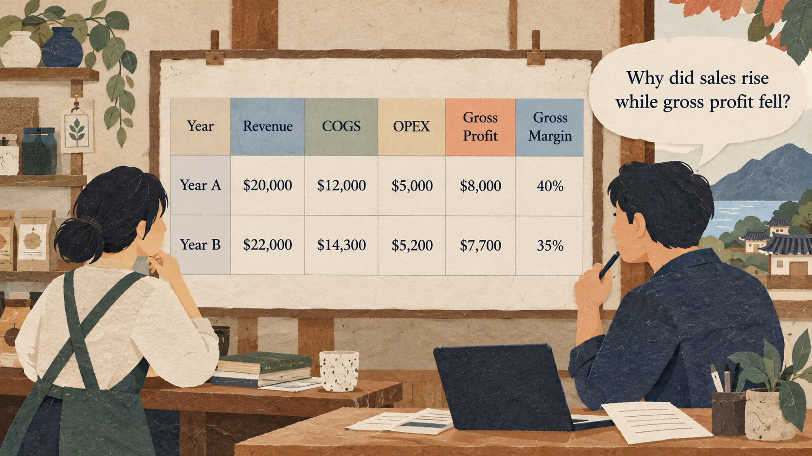

Situation
The problem
Sales can rise while the money left after direct costs falls. A manager needs to explain the change without confusing sales, direct costs, and overhead.

3 hours: 50-minute lesson, 10-minute break, 50-minute guided practice, 10-minute break, 50-minute applied practice, and 10-minute wrap-up.
Sales can rise while the money left after direct costs falls. A manager needs to explain the change without confusing sales, direct costs, and overhead.
Calculate gross profit and gross margin, check the arithmetic, and write a short evidence-based briefing.
Practice material: Use the practice material supplied in the session Markdown.
Do not replace missing information with guesses.
Sales can rise while the money left after direct costs falls. A manager needs to explain the change without confusing sales, direct costs, and overhead.
Work through the explanation before comparing prompts or starting the exercise.
Work through the explanation before comparing prompts or starting the exercise.
These examples come from the current session scenario.
Is this shop doing well? Tell me what to do.
Prove that higher sales mean the business is more profitable.
Keep the source, task, constraints, and output check visible.
Using only the four figures for Year A and Year B below, calculate gross profit and gross margin. Show the formula and arithmetic. Do not call gross profit net profit.
Use these checked results: Year A gross profit $8,000 and margin 40%; Year B gross profit $7,700 and margin 35%. Write a 100-word manager brief: state two facts, one possible explanation labeled as unverified, and one follow-up question. Do not invent a cause.
Use the complete case and instructions from the session Markdown.
Use the complete case and instructions from the session Markdown.
Check the output before sharing or acting on it.